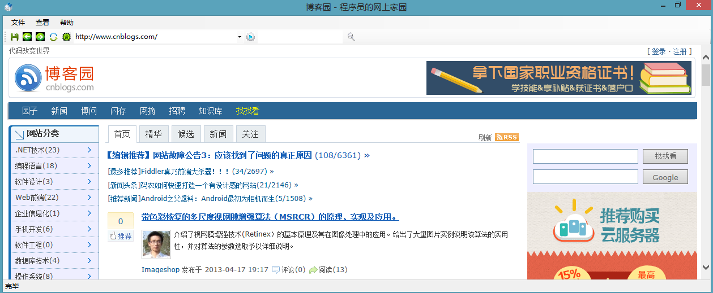
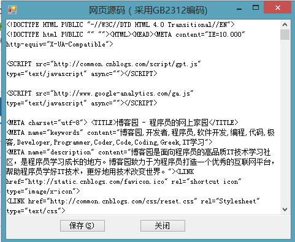

如何实现Web浏览器
简介
微软.NET平台封装了IE浏览器内核并以COM组件的形式提供用户，这个COM组件就是WebBrowser控件，该控件实现了浏览器中几乎全部的基本功能。
WebBrowser就是一个以IE(Trident)为内核，实现了基本功能的Web浏览器。使用WebBrowser控件可以在Windows窗体应用程序中浏览网页，WebBrowser控件位于工具箱中，使用时只需要将它直接拖拉到程序窗口中。
该示例演示了一个基于WebBrowser控件实现的一个简单的Web浏览器。该示例包括浏览器的基本功能——浏览网页，后退，前进和主页的功能，并且在地址栏也实现了对用户输入地址的保存，让用户可以看到之前输入的网址，并且实现了一个搜索的功能。
运行示例
第一步、打开"WebBrowser.sln"文件来打开项目解决方案, 按F5或Ctrl+F5 来运行该示例，这时候你将看到下面的窗体：

第二步、你还可以通过查看菜单->源代码来查看网页的源码. 此时你将看到源代码窗体,你也可以保存源代码到本地.

第三步、你同样可以像使用其他浏览器一样在地址栏输入地址然后按下Enter键或者点击旁边的运行按钮，此时你输入地址的网页将显示在自定义的浏览器窗口中。
第四步、你可以在搜索输入框中输入你想搜索的关键字,此时页面将会显示搜索出来的结果.

第五步、你也可以点击帮助->关于按钮来查看本示例的介绍。
使用代码
第一步、创建一个WinForm 应用程序。
第二步、从工具箱中拖WebBrowser控件到主界面中。
第三步、实现浏览器的基本功能，如后退，前进，刷新,主页等功能。
// 后退
private void pageBack_Click(object sender, EventArgs e)
{
this.pageWebBrowser.GoBack();
}
// 前进
private void pageForward_Click(object sender, EventArgs e)
{
this.pageWebBrowser.GoForward();
}
// 刷新
private void pageRefresh_Click(object sender, EventArgs e)
{
this.pageWebBrowser.Refresh();
}
// 主页
private void pageHome_Click(object sender, EventArgs e)
{
this.pageWebBrowser.GoHome();
}
// 后退 private void pageBack_Click(object sender, EventArgs e) { this.pageWebBrowser.GoBack(); } // 前进 private void pageForward_Click(object sender, EventArgs e) { this.pageWebBrowser.GoForward(); } // 刷新 private void pageRefresh_Click(object sender, EventArgs e) { this.pageWebBrowser.Refresh(); } // 主页 private void pageHome_Click(object sender, EventArgs e) { this.pageWebBrowser.GoHome(); }
第四步、为了用自定义的浏览器来对网页的显示，需要实现WebBrowser的NewWindow事件。
// 单击程序中某个链接后会打开新窗口，此时就会执行NewWinow事件中的代码
// 通过此事件中的代码将打开新窗口中内容添加到本软件的webBrowser控件中显示
// 实现网页用我们自定义的浏览器显示
private void pageWebBrowser_NewWindow(object sender, CancelEventArgs e)
{
string newURL = pageWebBrowser.StatusText;
FrmMain newform = new FrmMain(newURL);
newform.toolStripStatusView.Text = "正在打开网页 " + newURL + "...";
newform.Show();
// 使其他浏览器无法捕获此事件
// 阻止了其他浏览器显示网页，而是采用我们自定义的浏览器来显示
e.Cancel = true;
}
// 单击程序中某个链接后会打开新窗口，此时就会执行NewWinow事件中的代码 // 通过此事件中的代码将打开新窗口中内容添加到本软件的webBrowser控件中显示 // 实现网页用我们自定义的浏览器显示 private void pageWebBrowser_NewWindow(object sender, CancelEventArgs e) { string newURL = pageWebBrowser.StatusText; FrmMain newform = new FrmMain(newURL); newform.toolStripStatusView.Text = "正在打开网页 " + newURL + "..."; newform.Show(); // 使其他浏览器无法捕获此事件 // 阻止了其他浏览器显示网页，而是采用我们自定义的浏览器来显示 e.Cancel = true; }
// 点击搜索按钮
// 这里调用了百度的搜索引擎
private void toolbtnbaiduSearch_Click(object sender, EventArgs e)
{
Encoding utf8encoding = Encoding.UTF8;
string uri = "http://www.baidu.com/s?wd=" + System.Web.HttpUtility.UrlEncode(tooltbxKeyword.Text, utf8encoding);
HttpWebRequest request = (HttpWebRequest)HttpWebRequest.Create(uri);
HttpWebResponse response = (HttpWebResponse)request.GetResponse();
Stream stream = response.GetResponseStream();
StreamReader readerstream = new StreamReader(stream, utf8encoding);
pageWebBrowser.DocumentText = readerstream.ReadToEnd();
readerstream.Close();
stream.Close();
urlAddress.Text = uri;
AddItem_urlAddress();
}
// 点击搜索按钮 // 这里调用了百度的搜索引擎 private void toolbtnbaiduSearch_Click(object sender, EventArgs e) { Encoding utf8encoding = Encoding.UTF8; string uri = "http://www.baidu.com/s?wd=" + System.Web.HttpUtility.UrlEncode(tooltbxKeyword.Text, utf8encoding); HttpWebRequest request = (HttpWebRequest)HttpWebRequest.Create(uri); HttpWebResponse response = (HttpWebResponse)request.GetResponse(); Stream stream = response.GetResponseStream(); StreamReader readerstream = new StreamReader(stream, utf8encoding); pageWebBrowser.DocumentText = readerstream.ReadToEnd(); readerstream.Close(); stream.Close(); urlAddress.Text = uri; AddItem_urlAddress(); }
更多信息
WebBrowser 类
http://msdn.microsoft.com/zh-cn/library/system.windows.forms.webbrowser(v=vs.100).aspx
HttpWebRequest 类
http://msdn.microsoft.com/zh-cn/library/system.net.httpwebrequest(v=vs.100).aspx
WebBrowser 事件
http://msdn.microsoft.com/zh-cn/library/system.windows.forms.webbrowser_events(v=vs.80).aspx